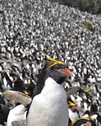

Facts and Life cycle information about Macaroni Penguins

Facts About Macaroni Penguins
Contrary to ones beliefs, Macaroni Penguins (Eudyptes chrysolophus) were not named after pasta. They were infact named by early English explorers who named the Penguins after young men in the mid 18th century who wore flashy feathers in their hats which was called a macaroni. Macaroni Penguins stand up to 28 inches tall and on average weigh 10 to 12 pounds.The Macaroni Penguins breeding colonies are among the largest and densest of the penguin world with up to 100,000 souls. For this reason they have an individualized indentifiable call, that allows its mate and chick to recognize them among rest. They molt once a year replacing all their old feathers, this is when they spend 3 to 4 weeks ashore. During that time ashore, the Macaroni Penguin doesn't feed due to not being able to enter the water while featherless. Even with approximately 100,000 Macaroni Penguins per colony, there has been widespread population declines and their conservation status is classifies as vulnerable.
 The Macaroni Penguins Life Cycle
The Macaroni Penguins Life Cycle
Unlike other penguins, the Macaroni Penguins lays 2 eggs at a time. Often the first egg is significantly smaller out of the two and gets abandoned by the parents so they can focus their energy on the second, much larger egg. For the first 12 days or so both parents will remain at the nest. For the next 30 days or so they take long, 8 to 12 day shifts incubating the egg for up to 40 days untill it hatches. The female penguin will spend the first 3 to 4 weeks of its chicks life bringing food back to the nest while the male stays at the nest. When the chicks are large enough, they gather in groups call creches. Providing the young penguins with safety in numbers and independence, freeing up both parents to return to sea and bring back food for their chicks who are growing faster than ever. Female Macaroni Penguins mature at the age of 5, 6 years old for males. In the wild a Macaroni Penguin can survive for up to 20 years. Due to predators, pollution and habitat loss, sadly the average is typically 8 to 15 years. With protection from predators, consistent food and regular veterinary care, a Macaroni penguin can live for up to 40 years in the safety of a zoo.